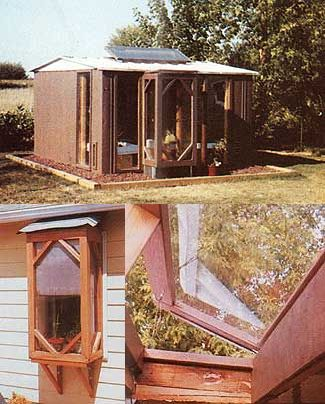

CLOCKWISE FROM LEFT. The windowbox planter that started it all . . . . This greenhouse produces flowers and vegetables right through the long winter .... In warmer months, the skylight opens to provide ventilation.